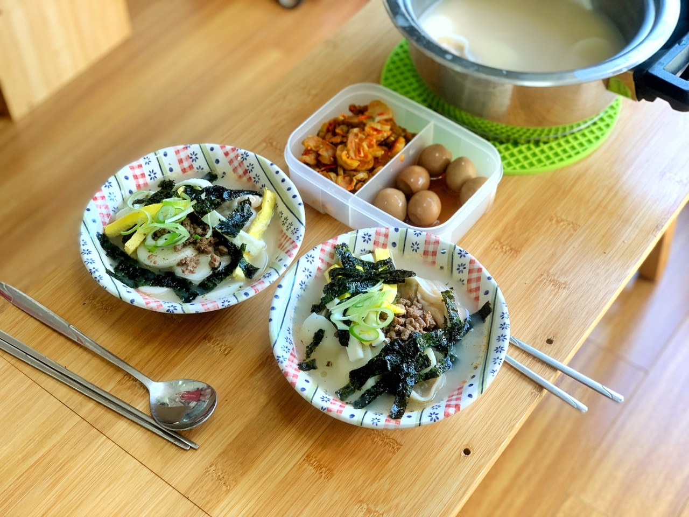

22.01.04
처음 만난 날
제발 둘이 만나라는 듯 노을이 정말 예뻤다
22.01.05
명함을 잘 안 준다던 당신이 준 명함
22.01.06
무슨 사이도 아닌데 왜 자랑을 했을까
무슨 사이가 될 것처럼😊
22.01.11
우리는 그새를 못 참고 또 만났다.
처음 술을 먹고 나는 잔뜩 취해서 집에 돌아갔다.
당신은 내가 집에 같이 들어가자고 할 줄 알았더랬다.
나는 취해서(졸려서) 그럴 정신이 없었다🍺
22.01.16
당신을 보러 강원도에 갔었다.
어떻게 왔지를 연신 말해줘서 괜히 기분이 좋았다.
22.01.19
우리가 처음으로 같이 사진을 찍은 날이었다🙂
22.01.21
우리가 처음 해먹었던 스테이크와 라따뚜이 기억나?
집에 마땅한 야채가 없어서 전날 쿠팡으로 급하게 곁들임 채소를 시켰었다.
22.01.22
함께 처음으로 먹었던 포케는 정말 맛있었고,
아직도 이길 포케를 먹지 못했다.
22.01.23
본가에서 이것저것 구워 먹고 서울로 돌아가는 길에 문득 당신에게 가려고 샀다.
당신이 피곤해해서 꽃만 두고 가려 했지만 나를 가지러 나와 집에 바래다 줬다.
당신은 꽃 선물을 받은 게 처음이라고 했다💐
22.01.26
텀블러를 바꿔야겠다는 말을 듣고 당신에게 어울릴만한 텀블러를 찾아봤다.
지금이라면 뭘 갖고 싶으냐고 물었겠지만 그때는 당신도 나처럼 깜짝 선물을 좋아할 거라고 생각했다.
차도 반짝 거리는 색깔이니까 텀블러도 반짝거리면 좋아하겠지? 싶었다.
당신은 조명에 텀블러를 비춰보며 예쁘다고 했다.
22.01.28
우리는 무슨 사이도 아니면서 커플 잠옷을 시켰다. 웃기는 짬뽕밥들이다.
당신의 말을 눈치채지 못하고 천장에 붙은 별을 봤을 때 얼마나 웃었는지 모른다.
22.01.29
처음 해먹은 토마토 달걀 볶음🍅🥚
당신은 앞으로 아침에 토달토달 해먹는 걸 좋아하게 된다.
앞으로 난바우동도 좋아하게 되지만 가게가 사라지고 만다...
누가 그랬지🤔
22.01.30
이 떡국을 만들 때 간이 이상해 꽤 애를 먹은 기억이 난다.
처음 먹은 떡국은 내가 만들고 당신이 도와줬었다.
1년 후 당신은 떡국 요리 마스터가 된다🥄
아무 사이도 아닌 우리의 두 번째 커플 잠옷이 왔다.